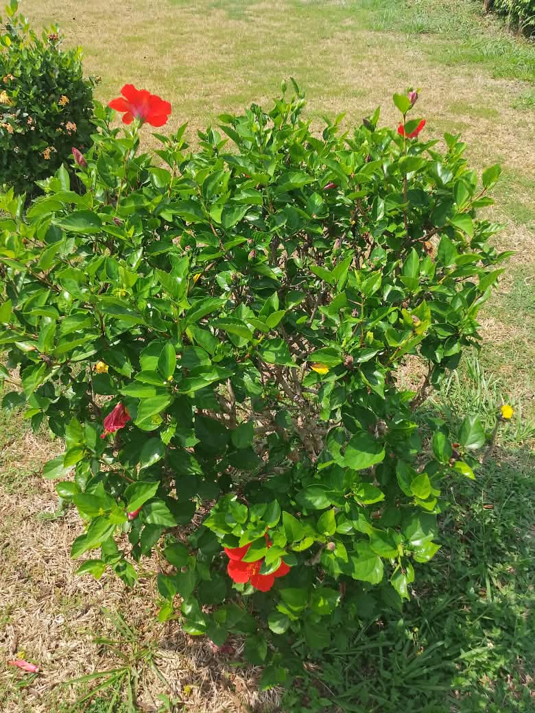
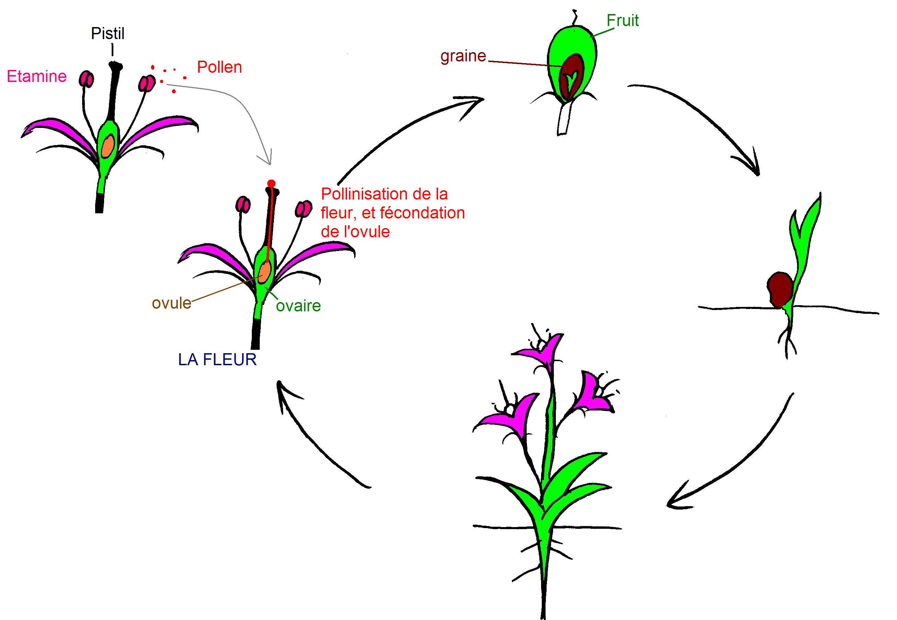

1 milliard d'années


L'hibiscus rose de Chine (Hibiscus rosa-sinensis) est un arbuste tropical angiosperme de la famille des Malvacées, au feuillage persistant vert brillant, célèbre pour ses grandes fleurs solitaires en entonnoir aux pétales éclatants et au long pistil proéminent.
En savoir plus